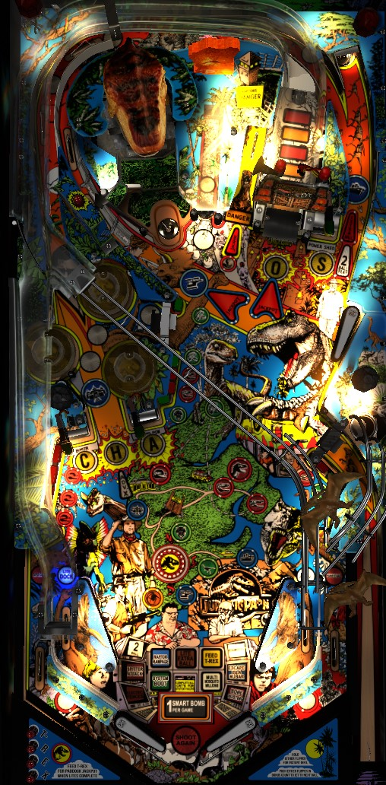

Not to be confused with The Lost World: Jurassic Park (Sega, 1997) or any of the various Jurassic Park games released by Stern Pinball between 2019 and 2023.
Jurassic Park is a relatively standard mode-based early 90s pinball game. System Failure wizard mode is one of the most accessible wizard modes in pinball thanks to the repeatability of a right ramp -> control room scoop combo, which starts a mode each time. Beelining to System Failure can net you 300-400 million points, which is good, but very skilled players should opt for Tri-Ball and Chaos Multiball; complete the lower left and center dinosaur targets, then shoot T-Rex, then in multiball collect the right ramp and upper loop jackpots followed by spelling Chaos.
The skill shot is a timed pull of the gun trigger plunger. Pull the trigger when the crosshairs on the display are aimed at the walking dinosaur to successfully score the skill shot. A successful skill shot scores 2,000,000 points on ball 1, 3,000,000 on ball 2, and 4,000,000 on ball 3, and any successful skill shot also starts Super Pops, in which all bumpers score 100,000 points and hitting all 3 bumpers scores a 1,000,000 point bonus until the ball leaves the bumper area. A failed skill shot scores 1/10 as many points as a successful one and does not start Super Pops, though the ball is plunged into the bumper area in any case.
The large red button on top of the gun launcher is the Smart Missile button. The Smart Missile can be used once per game and generally collects one shot for free toward any mode or feature running at that time. The Smart Missile is best used during Tri-Ball multiball; specific Smart Missile awards are discussed alongside their associated features throughout this guide. Triggering an out lane switch temporarily deactivates the Smart Missile; it is reactivated at the start of the next ball, or when another switch on the playfield is activated following a death save or bang back.
Modes are started by shooting the Control Room saucer, labelled with the letter A and positioned in roughly the same place as the Electric Chair on Addams Family, when it is lit. Shooting the Power Shed scoop in the upper right lights the Control Room solidly, and it will stay lit until collected. If System Failure wizard mode has not yet been played, the Control Room can also be lit temporarily (about 5 seconds) by rolling through either in lane. For the first set of Control Room modes, you can easily relight and start modes by shooting the right ramp, immediately followed by a very early left flipper shot that backhands the ball into the Control Room.
New modes can be started while any other mode is running, but you cannot start a mode during any multiball. In fact, starting any multiball instantly ends all Control Room modes currently in progress. Using the Smart Missile during any single-ball play will instantly start a Control Room mode as long as neither Two-Ball nor Tri-Ball are currently ready. If the Control Room is currently unlit or flashing, hitting any pop bumper will change which mode is lit, but if the Control Room is solidly lit, the currently selected mode is locked in as the next mode to start. The modes are:
Once all 11 modes have been played, the Control Room scoop is automatically lit for System Failure, the game's wizard mode. When System Failure starts, the DMD and playfield lights go crazy as if something is actually malfunctioning, and then 6 balls are plunged to the playfield. In System Failure, you get unlimited ball save for 45 seconds, and every switch in the game scores 1,000,000 points- that's it, no other rules. Since System Failure is a mode, it cannot be started while another multiball is running, but since System Failure is also a multiball, starting System Failure will instantly end any other mode that was already in progress. The best place to be during System Failure is to have as many balls in the pop bumpers as possible at all times, which may mean intentionally letting balls drain so their autoplunged replacements are fired into the bumpers. Using the Smart Missile scores an instant 50,000,000 points. A good System Failure that does not use the Smart Missile will usually score between 100,000,000 and 120,000,000 points. Once the 45 seconds expires, all balls are allowed to drain, and the same player continues shooting, with all Control Room mode progress reset so that the modes can be played again. Once System Failure has been played once, the in lanes no longer temporarily light the Control Room scoop for a mode start, and you need to shoot the Power Shed scoop in the upper right to qualify a mode, which makes getting to a second System Failure quite a bit harder.
Hit the 6 dinosaur standup targets- 3 in the lower left, and 3 in the center of the table facing right- to qualify Tri-Ball, which is the game's standard multiball. Making a left in lane -> far right Boat Dock shot combo spots 1 dinosaur target. If Tri-Ball has not yet been played, you also get 3 dinosaur targets spotted for you at the beginning of balls 2 and 3, which guarantees that Tri-Ball will be ready at least once in every game. Once Tri-Ball is ready, there are two ways to start it: you can either "taunt the raptors" by shooting the Raptor Pit kicker a lot (3 times for the first multiball, +2 for each subsequent multiball) or you can make a single shot that feeds the T-Rex. Feeding T-Rex is absolutely the way to go, because it's a less dangerous shot and never gets harder. When Tri-Ball starts, a total of 3 balls are put on the playfield, and all in-progress modes are immediately ended. Tri-Ball progression works like this:
If multiball ends during stage 1 before either of the standard dual jackpots are collected, a Tri-Ball Restart is available at the Raptor Pit or Feed T-Rex for 15 seconds. Using the restart means you only get 2 balls instead of 3, but if you progress to stage 3 of multiball from the restart, you will still get all 6 balls. The Smart Missile can be used to trigger the Restart, but it really shouldn't be used that way. There is no ball save of any kind on the Tri-Ball restart.
When you reach the game's replay score, Victory Laps automatically begins. Victory Laps is a 30 second mode where the goal is to shoot the right ramp 6 times: the first 5 score 5,000,000 each, and the 6th scores 25,000,000, for a total of 50,000,000 points. Victory Laps starts immediately; if any Control Room modes were running, those modes are paused until Victory Laps ends, and resume automatically afterward. Victory Laps can even be running during Two-Ball, any level of Tri-Ball, or System Failure. The Smart Missile does NOT collect any Victory Laps for you.
Shooting the right ramp enough times lights the Bunker scoop in the far lower left for a Mr. DNA mystery award. The first award needs 3 ramp shots, and each subsequent award needs 2 more than the previous, up to a maximum of at least 9. When you shoot the Bunker scoop, Mr. DNA will automatically scroll through a list of three awards; press the flippers or the gun trigger to select an award. Awards include the following:
In competition settings, the order of offered Mr. DNA awards is set. The first set is always 5,000,000/Complete Egg/Hurry-up Score; I don't know the rest of the order.
Shooting the kicker lane between the captive ball and the right ramp awards a Raptor Pit. The Raptor Pit value starts each ball at 2,000,000 points, and increases by 350,000 each time the Raptor Pit is scored. The Raptor Pit value can be held to the next ball by shooting the upper loop two consecutive times. When the Raptor Pit ejects the ball, it comes back down the table with incredibly high speed, and the "Danger" light in front of the Raptor Pit will flash. While this light is flashing, ball save is active. Hitting the Raptor Pit again while the Danger light is flashing will recollect all Raptor Pit values scored since the Danger light was completely off. For example, hit the Raptor Pit once for 2,000,000; hit it again immediately for 2,000,000 + 2,350,000 = 4,350,000; hit it again immediately for 4,350,000 + 2,700,000 = 7,050,000; etc.
Hit the captive ball repeatedly to hatch dinosaurs and earn awards. The first 3 hatches require 3, 4, and 5 hits respectively; every hatch after that needs 6 hits. The hatch awards are 5,000,000, then 10,000,000, then 15,000,000, then light extra ball, then 20,000,000. The 2nd hatch may also light an extra ball in accordance with game settings and extra ball percentaging. Starting with the 4th hatch, every hatch starts Super Egg Mania. Starting with the 6th hatch, every hatch scores a mystery award (either 20,000,000 points, light extra ball, or light special).
Super Egg Mania is started by hatching 4+ eggs or as a mystery award from Mr. DNA. A 25-second timer starts. Every hit to the captive ball scores 5,000,000 points and adds a ball to the playfield, unless all 6 are already in play. Captive ball hits no longer add balls if the timer has run out. The mode continues until there is both no time left on the clock and only one ball in play. All Control Room modes in progress are immediately ended when Super Egg Mania begins, and you cannot start any new modes or multiballs until Super Egg Mania ends. Using a Smart Missile during Super Egg Mania scores 5,000,000 points, adds 1 ball to the playfield if the 25 second timer is still running, and is a massive waste of a Smart Missile.
At random times, a video mode will begin, indicated by a distinctive noise. Pull the gun trigger about 5 times within a few seconds to stun a dinosaur, score 3,000,000 points, and activate Super Pops.
When the T-Rex is not lit for anything else, shooting the saucer in front of the T-Rex awards a letter in T-Rex, as indicated on the game apron near the left flipper. Spell T-Rex to earn the T-Rex Bounty, a minor progressive jackpot that seems to start at around 8,000,000 points, increase by about 250,000 points per right ramp shot, reset when collected, and build up across players and games.
Park Revenue starts at 500,000 points and increases by 30,000 with each pop bumper hit. Collect the Park Revenue value by shooting the lower left Bunker scoop immediately after rolling through the right in lane.
Jurassic Park has a conventional in/out lane setup. The left in lane lights the Boat Dock to spot a dinosaur target toward Tri-Ball. The right in lane lights the Bunker scoop to score Park Revenue and lights the left orbit shot through the bumpers to advance the bonus multiplier. Both in lanes temporarily light the Control Room scoop to start a mode, but only if the current player has not played System Failure in this game already. Out lanes deactivate the Smart Missile and can be lit for Special by random Egg Hatch and Mr. DNA mystery awards.
Jurassic Park does recognize bang backs and death saves. If the ball goes down an out lane but then a switch in the game other than a slingshot is triggered, you will receive a 5,000,000 point Death Save bonus, the Smart Missile is reactivated, and your turn continues. This is a very illegal move in any competition play, and performing it incorrectly can damage the machine or injure the player.
Bonus is simply calculated based on a count of switch hits. I do not know the exact formula. Max base bonus is 2,000,000 points, which is piddling score. A right in lane -> left orbit combo advances the bonus multiplier in the sequence 3x-6x-9x. Making two consecutive shots to the right ramp without missing will hold over the end of ball bonus and multiplier on the current ball to the next one. All in all, end of ball bonus on Jurassic Park, is basically worthless.
Bowen Kerins' notes guide indicates that in tournament mode, extra balls score 25,000,000 points. This seems reasonable, but I have not confirmed it for myself, nor am I aware of a point value that can be assigned to specials for competition/novelty play.
The ball save that is activated following a Raptor Pit shot can be disabled. This seems like an especially mean-spirited thing to do. The Danger light will still flash and the increased scoring is still available, but you won't get the ball back if the Raptors throw it down the center drain, which is liable to happen a fair amount.
T-Rex letters can either be reset at the beginning of each ball, or carried from ball to ball for each individual player during a game. If the latter setting is chosen, don't expect T-Rex Bounty to ever be worth much more than 10,000,000 points.